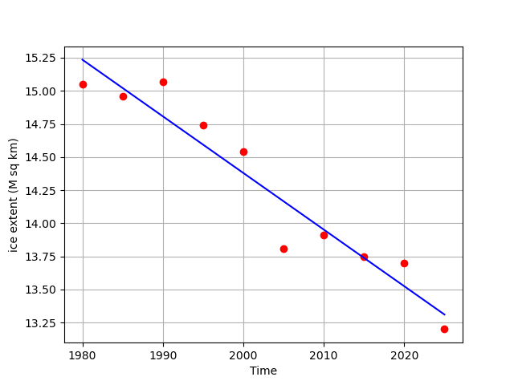

Additional Examples 4.1
1 Find the best least squares parabola for the points \((-2, 17), (0,6), (1, -9), (2, 3), (4, -2)\). Calculate the RMSE of the fit.
The model is \(y = c_1+c_2t+c_3t^2\). Each data point yields an equation:
\begin{eqnarray*}
c_1+c_2(-2)+c_3(-2)^2&=& 17\\
c_1+c_2(0)+c_3(0)^2&=& 6\\
c_1+c_2(1)+c_3(1)^2&=& -9\\
c_1+c_2(2)+c_3(2)^2&=& 3\\
c_1+c_2(4)+c_3(4)^2&=& -2
\end{eqnarray*}
The matrix form is
\[ A=\left[\begin{array}{ccc}
1&-2&(-2)^2\\
1&0&0^2\\
1&1&1^2\\
1&2&2^2\\
1&4&4^2
\end{array}\right]
\left[\begin{array}{r}
c_1\\c_2\\c_3
\end{array}\right]=
\left[\begin{array}{r}
17\\6\\-9\\3\\-2
\end{array}\right].
\]
The normal equations are \(A^TAc = A^Tb\), or
\[\left[\begin{array}{rrr}
5&5&25\\5&25&65\\25&65&289
\end{array}\right]
\left[\begin{array}{r}
c_1\\c_2\\c_3
\end{array}\right] =
\left[\begin{array}{r}
15\\-45\\39
\end{array}\right].
\]
Solving in augmented form:
\[
\left[\begin{array}{rrrcr}
5&5&25&|&15\\
5&25&65&|&-45\\
25&65&289&|&39
\end{array}\right] \longrightarrow
\left[\begin{array}{rrrcr}
5&5&25&|&15\\
0&20&40&|&-60\\
0&40&164&|&-36
\end{array}\right]\longrightarrow
\left[\begin{array}{rrrcr}
5&5&25&|&15\\
0&20&40&|&-60\\
0&0&84&|&84
\end{array}\right]
\]
Backsubstitution yields
\begin{eqnarray*}
c_3&=&1\\
20c_2 &=& -60-40(1) = -100 \rightarrow c_2 = -5\\
5c_1+5(-5)+25(1) &=& 15 \rightarrow c_1 = 3
\end{eqnarray*}
The best parabola is \(y = 3 - 5t + t^2.\)
To find the RMSE, compute \[Ac = \left[\begin{array}{ccc}
1&-2&(-2)^2\\
1&0&0^2\\
1&1&1^2\\
1&2&2^2\\
1&4&4^2
\end{array}\right]
\left[\begin{array}{r}
3\\-5\\1
\end{array}\right] =
\left[\begin{array}{r}
17\\3\\-1\\-3\\-1
\end{array}\right].
\]
Comparing with \(b\), the errors are \( 0, 3, 8, 6, 1\), and the RMSE is \(\sqrt{\frac{0^2+3^2+8^2+6^2+1^2}{5}} = \sqrt{22}\).
2 Use Python code to find the best least squares line through the North Pole ice extent data from Additional Example 3.1.2. Use the line to predict the ice extent in the year 2030.
The data from Additional Example 3.1.2 is
\begin{array}{cc}
1980 &15.05\\
1985 &14.96\\
1990 & 15.07\\
1995 & 14.74\\
2000 & 14.54\\
2005 & 13.81\\
2010 & 13.91\\
2015 & 13.75\\
2020 & 13.70\\
2025 & 13.20
\end{array}
The model is \(y = c_1+c_2s,\) where we set \(s = t-1980\) for simplicity. The matrix form is
\[ A=\left[\begin{array}{cc}
1&0\\
1&5\\
1&10\\
1&15\\
1&20\\
1&25\\
1&30\\
1&35\\
1&40\\
1&45
\end{array}\right]
\left[\begin{array}{r}
c_1\\c_2
\end{array}\right]=
\left[\begin{array}{r}
15.05\\
14.96\\
15.07\\
14.74\\
14.54\\
13.81\\
13.91\\
13.75\\
13.70\\
13.20
\end{array}\right].
\]
The normal equations are:
\[\left[\begin{array}{rr}
10&225\\225&7125
\end{array}\right]
\left[\begin{array}{r}
c_0\\c_1
\end{array}\right] =
\left[\begin{array}{r}
142.73\\3123.2
\end{array}\right].
\]
Solving gives \(c_1 = 15.235, c_2 = -0.0427.\) The best line is \(y = 15.235-0.0427s\). The model predicts \(c_1+c_2(50) = 13.10\) for \(s = 50\).
The following code plots the best line:
import numpy as np
import matplotlib.pyplot as plt
t = np.linspace(0,45,10)
y = np.array([15.05,14.96,15.07,14.74,14.54,13.81,13.91,13.75,13.70,13.20])
A = np.array([np.ones((10)),t]).T
ATA = A.T@A
ATy = A.T@y
c = np.linalg.solve(ATA,ATy)
print(ATA)
print(ATy)
print(c)
print(c[0]+c[1]*50.)
plt.plot(t+1980,y,'ro',t+1980,c[0]+c[1]*t,'b')
plt.xlabel('Time')
plt.ylabel('ice extent (M sq km)')
plt.grid(True)
plt.show()
